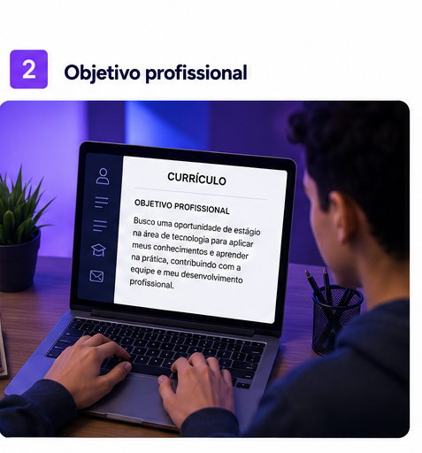
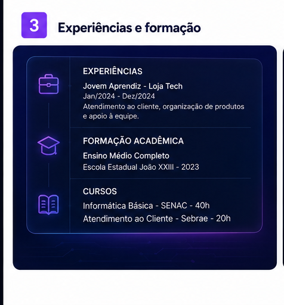
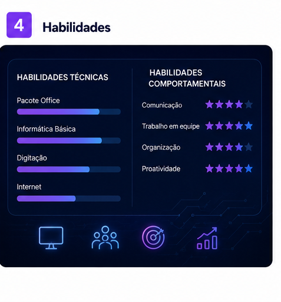

01
Dados pessoais
Comece colocando suas principais informações de contato.
- Nome completo
- Telefone
- E-mail profissional
- Cidade onde mora
O currículo é um documento importante para buscar oportunidades de trabalho. Nesta aula, você vai aprender como organizar informações pessoais, experiências e habilidades de forma simples e profissional.
Aprenda como criar um currículo simples, organizado e fácil de ler.
Comece colocando suas principais informações de contato.
O objetivo profissional deve mostrar qual área ou vaga você procura.

Adicione experiências profissionais, cursos e atividades importantes.

Liste conhecimentos que podem ajudar no trabalho.

Um currículo não precisa ser complicado. O mais importante é organizar as informações de forma clara, objetiva e fácil de entender.
Pequenos cuidados podem deixar seu currículo mais profissional.
Mantenha o currículo limpo, com poucas cores e textos organizados.
Revise erros de português antes de enviar o currículo.
Utilize um e-mail profissional e atualizado para receber respostas.